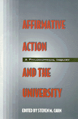

Philosophical debates on equality in the university
Philosophical debates on equality in the university


 Philosophical debates on equality in the university
Philosophical debates on equality in the university

|  |
Affirmative Action and the UniversityA Philosophical Inquiryedited by Steven M. Cahnpaper EAN: 978-1-56639-399-7 (ISBN: 1-56639-399-X) |
"This book is recommended for anyone interested in understanding, questioning, articulating, and acting on the basis of their own and others' perspectives on sexism, racism, and affirmative action in American higher education."
—Choice
While equal opportunity for all candidates is widely recognized as a goal within academia, the implementation of specific procedures to achieve equality has resulted in vehement disputes regarding both the means and ends. To encourage a reexamination of this issue, Cahn asked three prominent American social philosophers—Leslie Pickering Francis, Robert L. Simon, and Lawrence C. Becker—who hold divergent views about affirmative action, to write extended essays presenting their views. Twenty-two other philosophers then respond to these three principal essays. While no consensus is reached, the resulting clash of reasoned judgments will serve to revitalize the issues raised by affirmative action.
Introduction – Steven M. Cahn
Part I
1. In Defense of Affirmative Action – Leslie Pickering Francis
2. Affirmative Action and the University: Faculty Appointment and Preferential Treatment – Robert L. Simon
3. Affirmative Action and Faculty Appointments – Lawrence C. Becker
Part II
4. What Good Am I? – Laurence Thomas
5. Who "Counts" on Campus? – Ann Hartle
6. Reflections on Affirmative Action in Academia – Robert G. Turnbull
7. The Injustice of Strong Affirmative Action – John Kekes
8. Preferential Treatment Versus Purported Meritocratic Rights – Richard J. Arneson
9. Faculties as Civil Societies: A Misleading Model for Affirmative Action – Jeffrie G. Murphy
10. Facing Facts and Responsibilities – The White Man's Burden and the Burden of Proof – Karen Hanson
11. Affirmative Action: Relevant Knowledge and Relevant Ignorance – Joel J. Kupperman
12. Remarks on Affirmative Action – Andrew Oldenquist
13. Affirmative Action and the Multicultural Ideal – Philip L. Quinn
14. "Affirmative Action" in the Cultural Wars – Frederick A. Olafson
15. Quotas by Any Name: Some Problems of Affirmative Action in Faculty Appointments – Tom L. Beauchamp
16. Are Quotas Sometimes Justified? – James Rachels
17. Proportional Representation of Women and Minorities – Celia Wolf-Devine
18. An Ecological Concept of Diversity – La Verne Shelton
19. Careers Open to Talent – Ellen Frankel Paul
20. Some Sceptical Doubts – Alasdair MacIntyre
21. Affirmative Action and Tenure Decisions – Richard T. De George
22. Affirmative Action and the Awarding of Tenure – Peter J. Markie
23. The Case for Preferential Treatment – James P. Sterba
24. Saying What We Think – Fred Sommers
25. Comments on Compromise and Affirmative Action – Alan H. Goldman
About the Authors
Index
Steven M. Cahn is Professor of Philosophy and former Provost and Vice President for Academic Affairs at the Graduate Center of the City University of New York. He has published numerous other books, including Morality, Responsibility, and the University (Temple).
Contributors: Laurence Thomas, Ann Hartle, Robert G. Turnbull, John Kekes, Richard J. Arneson, Jeffrie G. Murphy, Karen Hanson, Joel J. Kupperman, Andrew Oldenquist, Philip L. Quinn, Frederick A. Olafson, Tom L. Beauchamp, James Rachels, Celia Wolf-Devine, La Verne Shelton, Ellen Frankel Paul, Alasdair MacIntyre, Richard T. De George, Peter J. Markie, James P. Sterba, Fred Sommers, Alan H. Goldman, and the editor.
Philosophy and Ethics
Education
© 2015 Temple University. All Rights Reserved. This page: http://www.temple.edu/tempress/titles/982_reg.html.